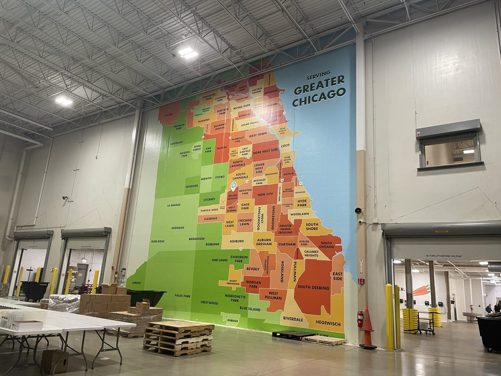
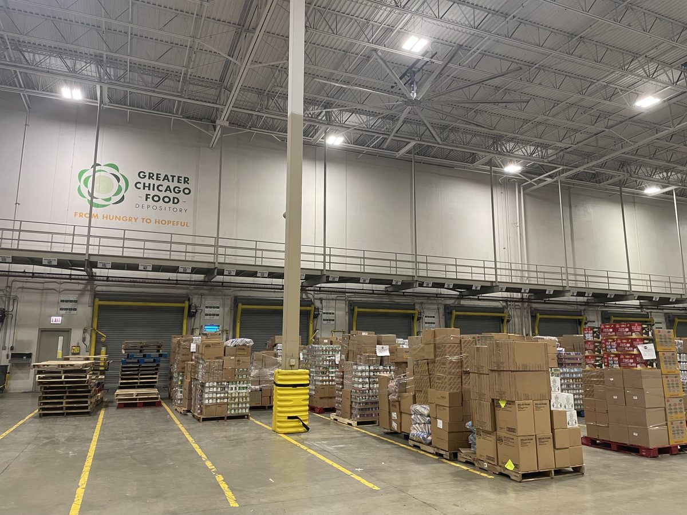
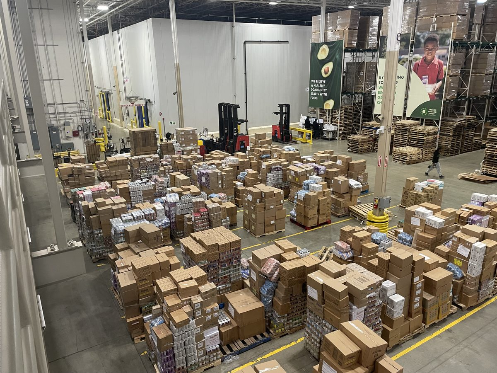
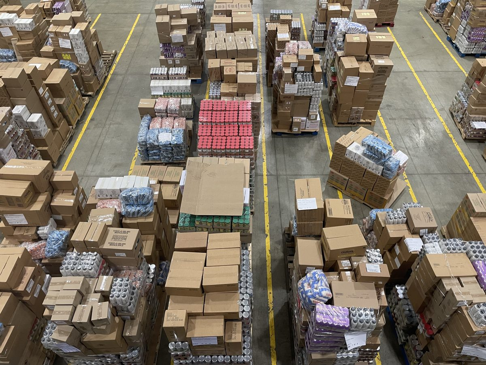
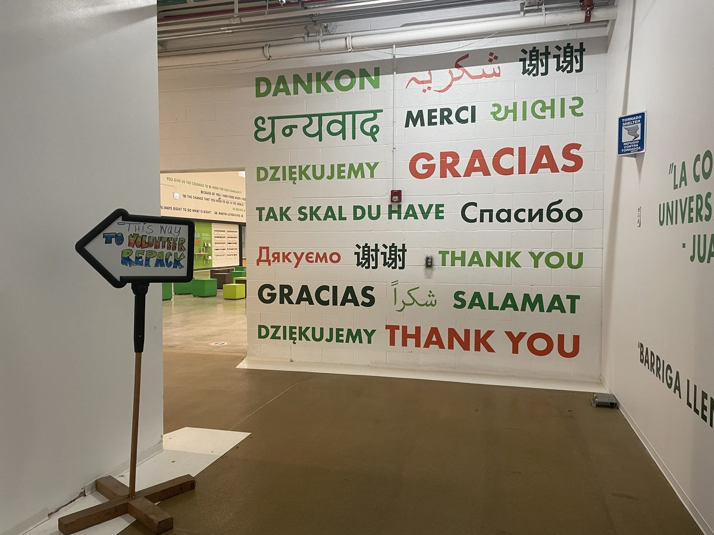
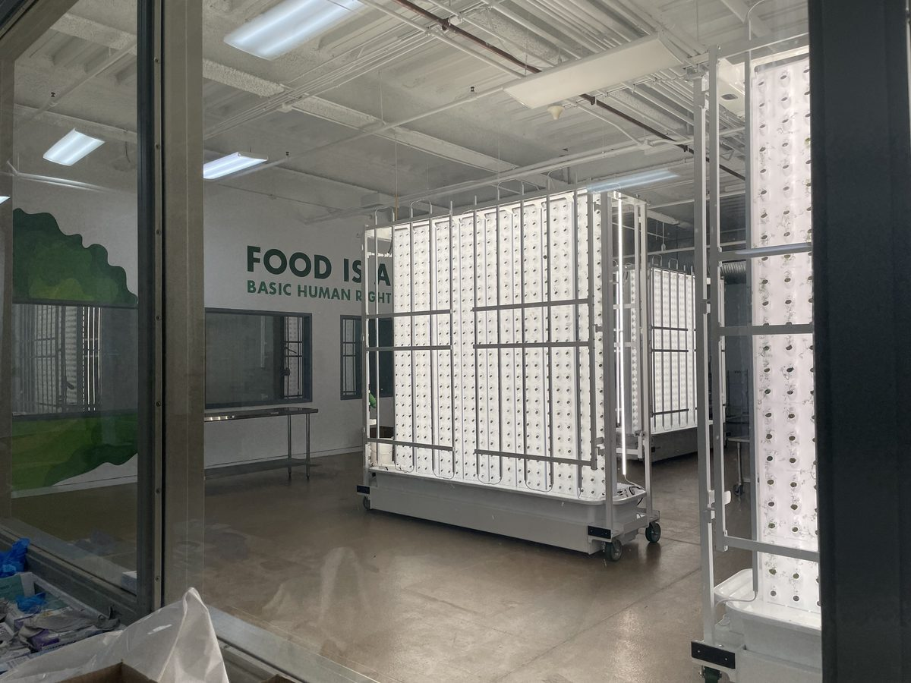
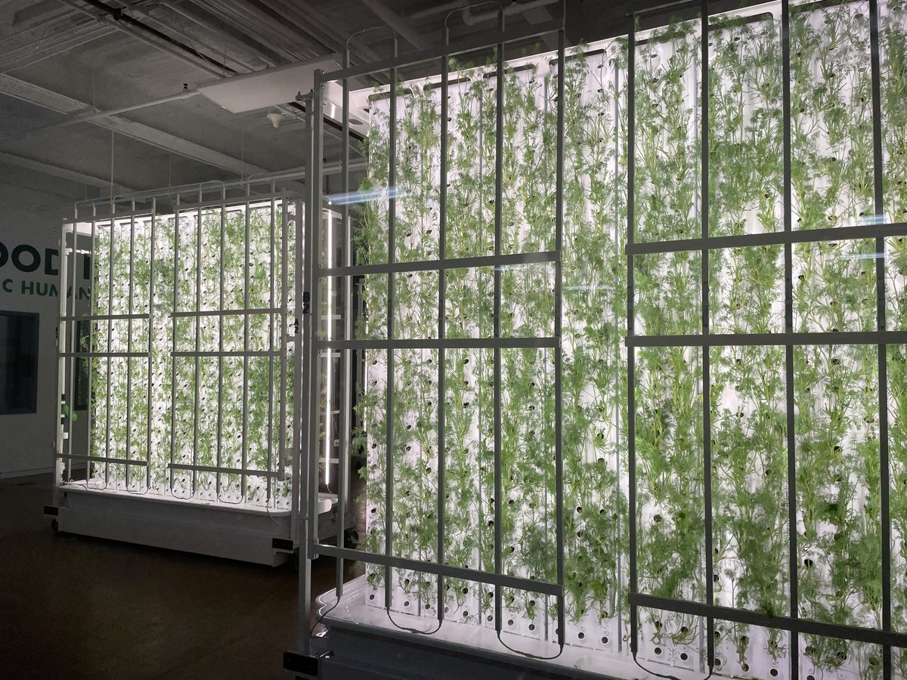
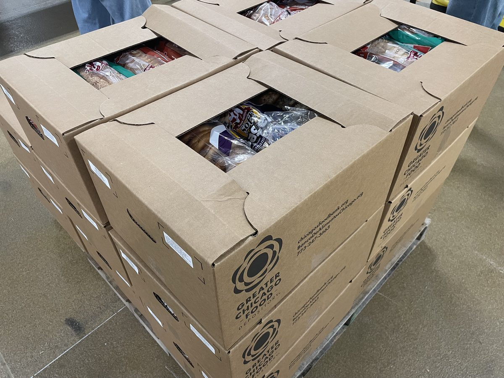

From hot meals to pantry-staple food drives and food banks, the GCFD's mission to fight hunger is serving approximately two hundred thousand families each month. Nearly one in five households in Chicago are currently experiencing food insecurity of some sort, with even more families at risk due to the loss of SNAP benefits. The GCFD's mission, however, extends beyond physical food — through advocacy, volunteers and staff alike use their voices to spread awareness of food insecurity reaching far beyond the Chicagoland area. Vulnerable populations are welcome to receive food, as a right, without fear of judgment.
The next goal of the GCFD is to ensure equal rights, equal access, and a secure future for food — one where nobody has to go hungry. Advocacy means planning for the future, not just the present.

The GCFD employs a fleet of 80-plus vehicles to deliver food and stock food banks around the Chicagoland area, managing immense distribution, sorting, and repackaging demands. The organization purchases a large amount of food at bulk prices, utilizing monetary donations to their utmost. This purchased food, along with donated food from many locations and government programs, supplies the Chicagoland area. As the volume of food handled is enormous, volunteers are necessary to guarantee that enough food is sorted and processed in time.



Without volunteers, it would be much more difficult for the GCFD to supply food across the region. A typical volunteer session involves repacking food, sorting produce, or preparing boxes for pantries. Repacks generally follow one format: measuring, separating, or reorganizing existing food for ease of distribution. Sorting sessions focus on checking the quality of produce and separating good produce from bad.
A typical group divides into different roles — for example, a pantry-staple box session might include box-making, food packing, trash running, box taping, and pallet stacking. For those with accessibility or medical needs, roles requiring little to no lifting are available, and accommodations can be arranged by contacting the GCFD before the session.

Although the GCFD handles enormous quantities of sorting, repackaging, and delivering, it also operates a kitchen that prepares fresh, nutritious, and healthy meals — offering hot food for those who need it. Part of the facility is also a hydroponics lab, where fresh herbs are grown year-round. Utilizing methods that conserve water and space, the GCFD maximizes what it can produce to provide fresh meals to the Chicagoland area.


Depending on the food pantry, soup kitchen, or on-site distribution point, elderly individuals and people with disabilities may be able to send a friend or family member on their behalf with a waiver — increasing the accessibility of food support. Rules and requirements for receiving assistance may differ by location, so it is always worth calling ahead.

The Greater Chicago Food Depository is always looking for volunteers and support. Visit chicagosfoodbank.org to volunteer, donate, or advocate against food insecurity — or to locate a food pantry, find cooking videos, or get help applying for SNAP or Medicaid benefits.